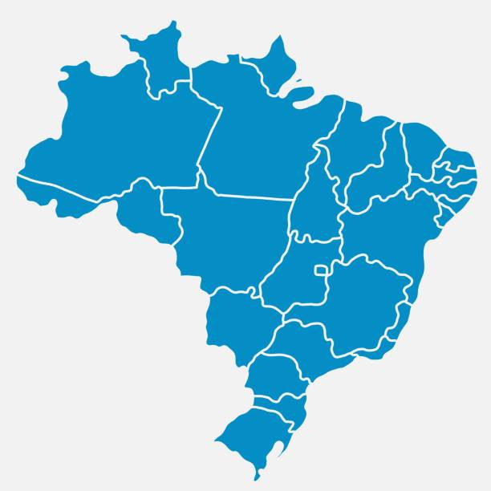

Créditos
Brasil
Mundo
Profissões em alta

Em alta no Brasil
São considerados trabalhadores da saúde todos aqueles que atuam em espaços e estabelecimentos de assistência e vigilância à saúde.
Em alta no Mundo
O planejamento é o primeiro pilar da gestão financeira e serve para definir os resultados a serem alcançados.